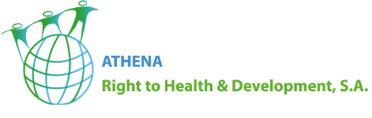

Transformar dados em decisão
Dashboards, modelação, qualidade de dados, relatórios executivos e indicadores úteis para gestão.
Apoiamos organizações na transformação de dados, adoção responsável de inteligência artificial, desenvolvimento de software, modernização cloud e sustentação de ambientes tecnológicos.
Capacidades aplicadas
Apoiamos equipas a organizar dados, automatizar processos, modernizar sistemas e manter ambientes tecnológicos estáveis, com soluções proporcionais ao contexto da organização.
Dashboards, modelação, qualidade de dados, relatórios executivos e indicadores úteis para gestão.
Casos de uso, preparação de dados, automação assistida e integração de IA em processos reais.
Aplicações web, APIs, sistemas internos e integrações ajustadas ao funcionamento da organização.
Cloud, redes, servidores, hardware e suporte técnico com foco em disponibilidade e manutenção.
Serviços
Uma oferta compacta que cobre análise, implementação, suporte e transferência de conhecimento.
Business Intelligence, dashboards, ETL, modelação de dados, qualidade de dados, Power BI, Python, R e Tableau.
Ver detalhesIdentificação de casos de uso, automação assistida, integração de IA e orientação para uso responsável.
Ver detalhesAplicações web, sistemas internos, APIs, integrações, modernização de aplicações e documentação técnica.
Ver detalhesArquiteturas em AWS e Azure, processos serverless, pipelines de dados e automação operacional.
Ver detalhesServidores, redes, equipamentos, suporte técnico, documentação e recomendações de continuidade operacional.
Ver detalhesDHIS2, OpenMRS, REDCap, ODK, OpenLMS e capacitação técnica para equipas de operação e análise.
Ver detalhesSobre Nós
A Pivotal é uma empresa de consultoria em TICs que apoia organizações na utilização prática da tecnologia para melhorar decisões, processos e operações.
Actuamos em ciência de dados, Business Intelligence, adoção de inteligência artificial, desenvolvimento de software, computação em nuvem, infraestrutura de TI, hardware e soluções de saúde digital.
O nosso trabalho combina análise do contexto, desenho técnico, implementação e transferência de conhecimento. A prioridade é entregar soluções compreensíveis, sustentáveis e ajustadas à realidade operacional de cada cliente.
Equipa Chave
A equipa combina competências em engenharia de software, análise de negócio, dados, visualização de informação, implementação de soluções e infraestrutura de redes.
Engenharia de Software e Análise de Negócio
Liderança Técnica e Implementação de Soluções
Análise de Dados e Visualização de Informação
Desenvolvimento de Software Back-end
Consultor de Infraestrutura de Redes
Abordagem
Cada projeto começa com entendimento do contexto do cliente e termina com solução utilizável, documentada e transferida para as equipas envolvidas.
Processos, dados, infraestrutura, restrições e prioridades.
Arquitetura, ferramentas, integrações e critérios de aceitação.
Construção, configuração, migração, automação e validação.
Documentação, formação e apoio à adoção pelas equipas.
Recursos
A seleção tecnológica depende do contexto, mas a atuação cobre plataformas consolidadas para dados, IA, cloud, software, saúde digital e infraestrutura.
Empresas com as quais já trabalhamos
A Pivotal tem trabalhado com organizações que precisam estruturar dados, apoiar operações e fortalecer sistemas digitais com abordagem técnica e responsável.

FAQ
Próximos passos
Envie uma mensagem para alinhar contexto, prioridade e próximos passos.
Abrir formulárioUse o contacto institucional para pedidos de reunião, proposta ou esclarecimento técnico.
agnaldo.samuel@pivotal.co.mzContacto telefónico para questões rápidas ou marcação de conversa inicial.
+258 84 412 9138